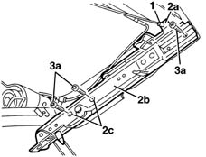

7050A50 GUIDES for moving rear seat - R.R. with seat removed
- Path
- Procedures > 70 FITTINGS > 7050 REAR SEATS > 7050A rear seat assembly > 7050A50 GUIDES for moving rear seat - R.R. with seat removed
- Kind
- repair procedure (removal / refitting; the operation number is the code)
- Applies to
- all engines; all production periods
- Interactive page
- https://sloeber94.github.io/elrnDB-lYpsln/en/#/2429646
Applies to: all engines; all production periods
 Removing
Removing
 Refitting
Refitting1. Disconnect the control cable.
2. Operating the lever (2a) manually, slide the guide (2b) until the openings (2c) are in line with the bolts fixing the actual guide.
3. Undo the fixing bolts (3a) and remove the guide assembly (2b).

Applies to: all engines; all production periods
Refitting
RemovingCheck that the guides are not damaged.
Position the guide using the lever and placing the openings in line with the seats for the bolts.
Tighten the bolts and connect the control cable.